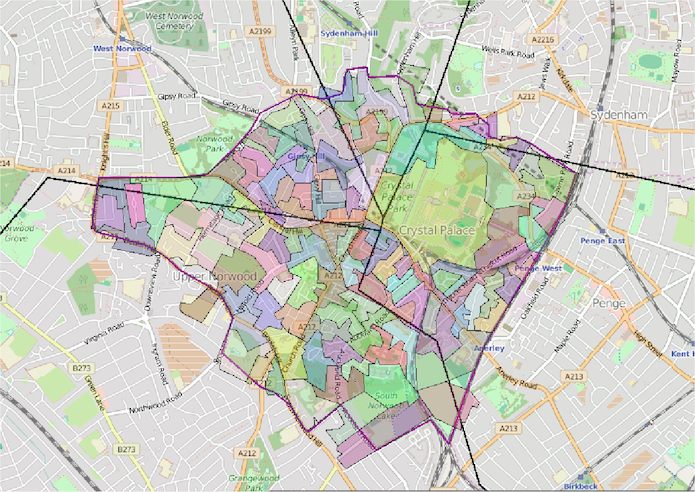

Guest post: Putting forgotten communities back on the map with open data
How do official boundaries impact on the services, representation and livelihoods that they fall on? Mike Thacker from Porism explains how to put communities back on the map, define your area and highlight community issues that can otherwise be missed
Where is Crystal Palace? With overlapping local authorities, it's hard to pin-point using official boundaries. CC BY 2.0, uploaded by bjaglin.
By Mike Thacker
Where is Crystal Palace? Nowhere – at least it’s not a distinct area represented by elected politicians, served by an arm of local government or measured by most statisticians. But it’s called home by thousands of people and businesses whose bins get emptied by one of five councils.
Carving official boundaries: winners and losers
The Boundary Commission and statistical bodies have to draw the lines somewhere, and there are bound to be winners and losers when the country is carved up.
The winners are areas that fit nicely into official geographies, so it is easy to provide hard evidence of their characteristics and justify providing specific public services on them.
The losers are communities sliced up by official boundaries. Crime hotspots are missed where crimes are committed on either side of a boundary. Where two electoral wards meet at a high street, people on either side of the road are treated as unrelated groups. My own town centre, in Brixton, falls into parts of three parliamentary constituencies: Dulwich and West Norwood, Streatham and Vauxhall.
Putting our communities on the map
One solution for putting our communities on the map is to draw our own maps, gather our own data and describe areas for ourselves. In that way we can highlight community issues that are otherwise missed. We just need that process to be easier and for the results to be better shared. We need to be able to make better use of data that’s already available and to share our work so others can use it without having to start from scratch.
Cue Natural Neighbourhoods
In March 2014, Cheshire East completed its work on Natural Neighbourhoods to define real-life communities that official boundaries don’t identify. The tool allowed anyone (from all walks of life, not just local authority officers) to define their own areas within a local authority boundary. They’d be able to see reports and statistics for the area, and it could be published as open data, too. Public data on population breakdowns, levels of crime, health issues, pollution and much more could be automatically recalculated for user-defined areas. So, for example, partnerships of health, community and voluntary workers can get a good breakdown of the demography of their ‘patch’ and identify less vociferous minority groups. People can then link their data and documents to one another’s areas.
A multitude of neighbourhood types have subsequently been defined around the country, such as: local partnership areas; children’s services catchment areas; town centres; town and rural areas; community networks; and planning settlements. LG Inform Plus has automatically collated public data for the newly defined neighbourhoods, meaning that previously unimaginable reports on demographics and statistics were a possibility. What’s more, an Application Program Interface (API) meant that thoughtful programmers could bring meaningful information into people’s lives through apps and websites.
Those neighbourhoods solved many problems for people who wanted to report on specific areas and exchange data about them (eg compare the economic activity of different town centres within a county), but it inspired a clamour for the tool to be more ambitious. Hence Cheshire East pressed on with work supported by the Cabinet Office’s Breakthrough Fund, which resulted in an open source, flexible open geographies application. This now allows areas to be defined irrespective as to whether they fall within local authority boundaries. It does not force areas to be made up of pre-existing, smaller statistical areas, but provides a 'best fit' of such areas if you want, meaning area hierarchies can be defined.
All those possibilities have now been included within a major upgrade of the Natural Neighbourhoods tool. There you’ll see official geographies (eg counties of England) and new types of area such as Neighbourhood Plan Areas defined by the 2012 Neighbourhood Planning (General) Regulations.
So where is Crystal Palace?
Well, it’s here, shown with its best-fitting output areas (used to record ONS data) and borders of overlapping local authorities: this is the area that Crystal Palace’s own people have said defines their community.

This is its "unique resource identifier" (URI) and this is a report describing it, automatically constructed based on its boundary line.
The Natural Neighbourhoods tool makes areas defined by individuals as important as ones defined by government bodies. All types of area can be overlaid on one another to see how official and real-world boundaries differ. Statistics can be re-aggregated for new geographies to evidence real-world issues, divert resources, bid for funds and assess the impact of local initiatives. Every area defined becomes open data for collaborative use by everyone.
If your area is not defined, sign up and add it. If you need a new area type you can create one. If in any doubt, chat with the LG Inform Plus support team who are there to help you bring forgotten communities back to the fore.
Mike Thacker is Systems Director at Porism. Follow @MikeThacker and @Porism on Twitter.
If you have ideas or experience in open data that you'd like to share, pitch us a blog or tweet us at @ODIHQ.